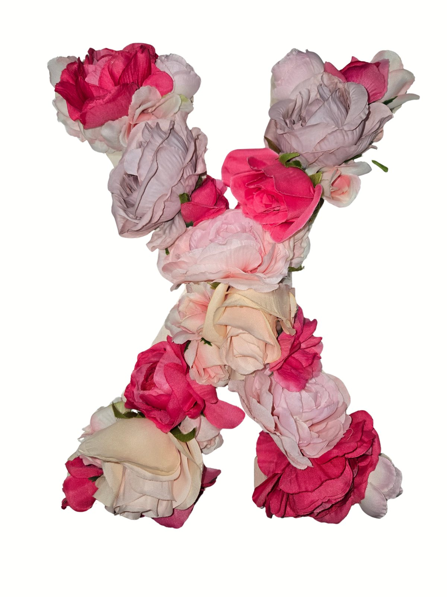
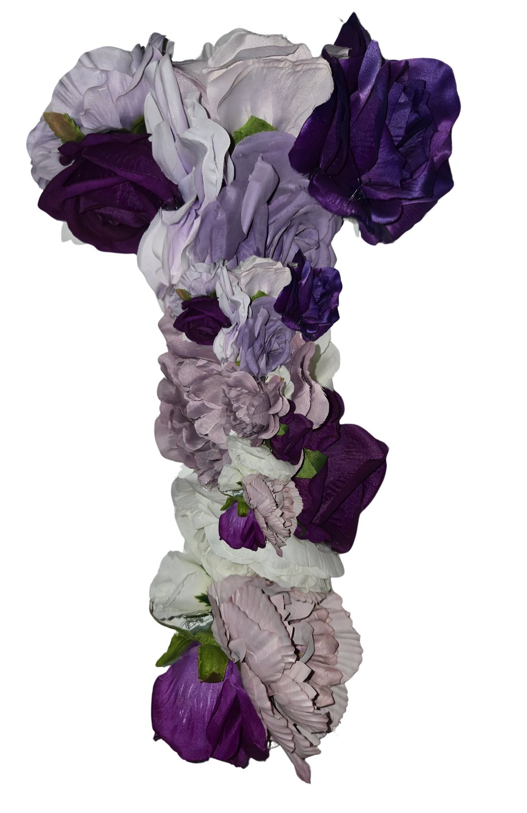
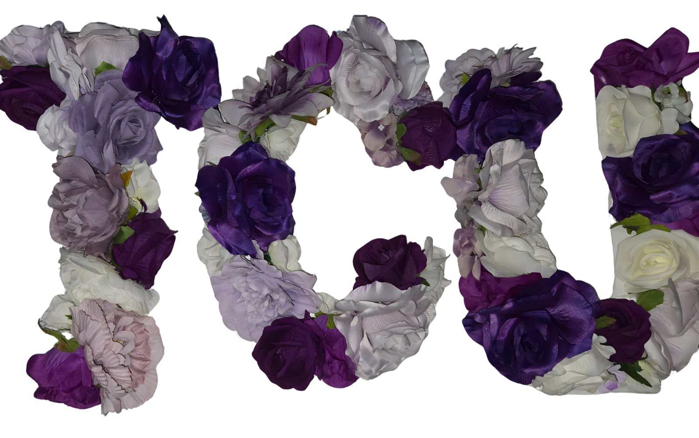
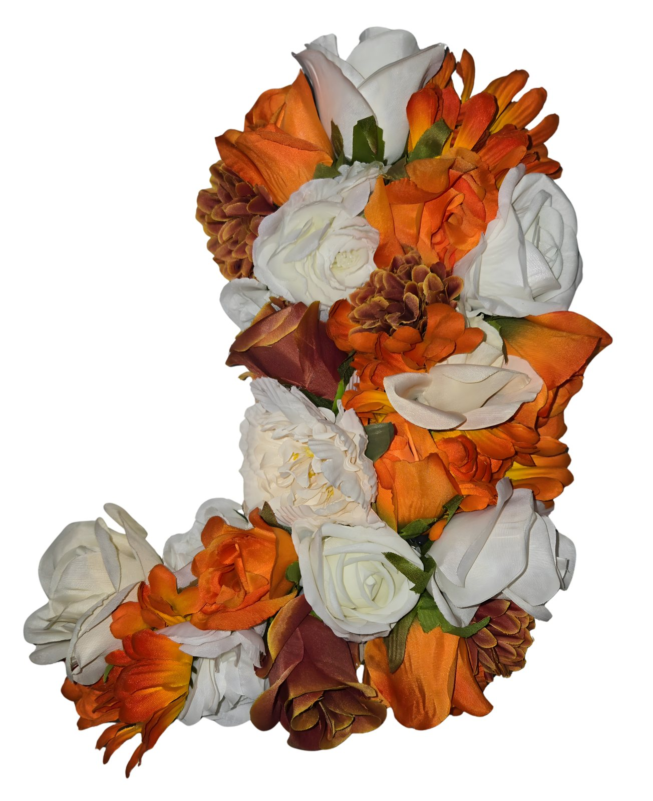
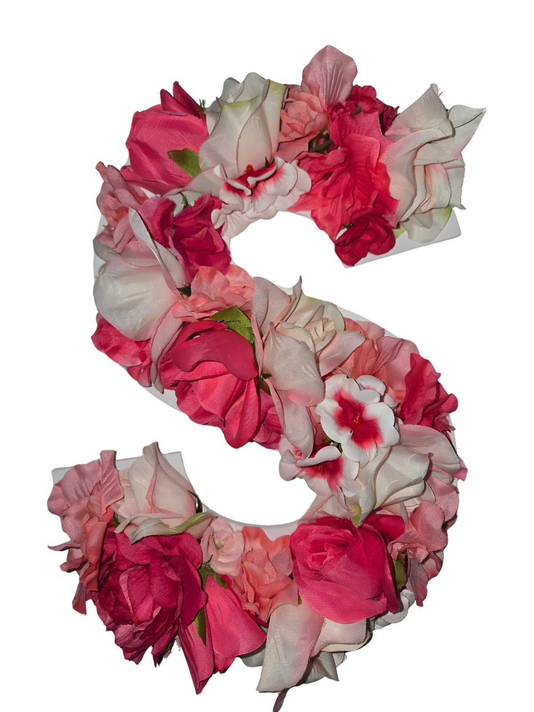
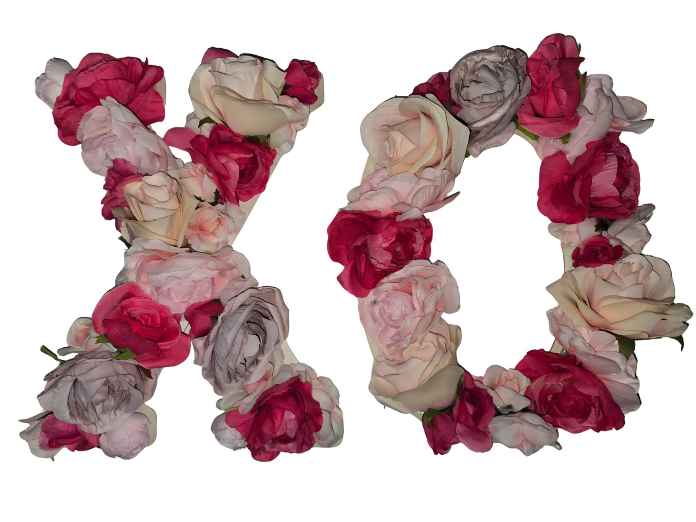
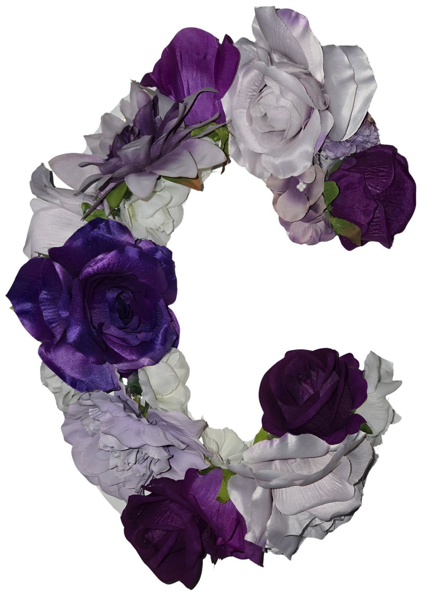
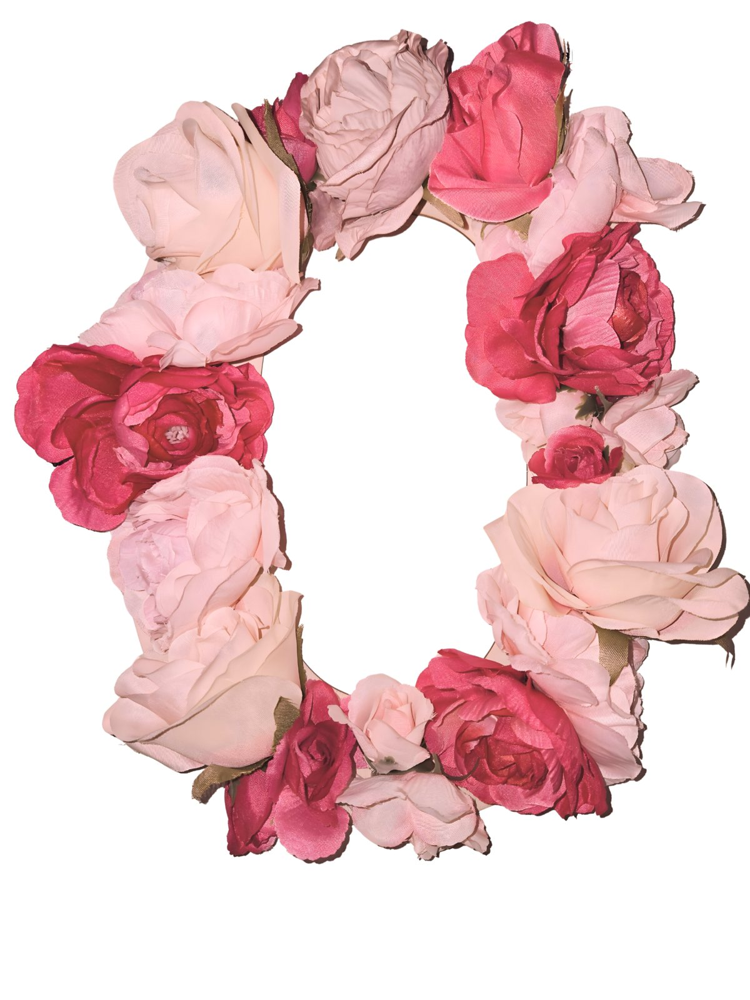
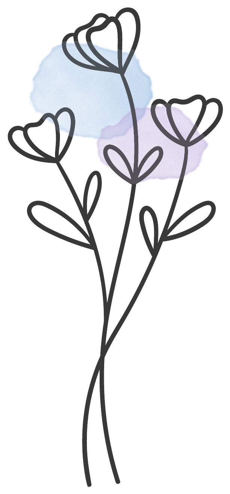

recent work








how a custom order works
choose your letter
A single initial, a monogram, a short word, or a shape like a cowboy boot.
pick your colors
Tell me the room, the school colors or the wedding palette, and I'll match the blooms.
I build it by hand
Every flower is placed one at a time, then it's packed with care and shipped to you or the lucky recipient.

hi, I'm julie
By day I'm an educator. By night (and weekends, and the occasional lunch break) I'm a maker who can't walk past a craft aisle without starting a new project. If there's an occasion, I want to make something for it.
Jules Studio is where those projects become gifts: floral letters for a nursery, a monogram for a dorm room, school colors for game day.
thank you